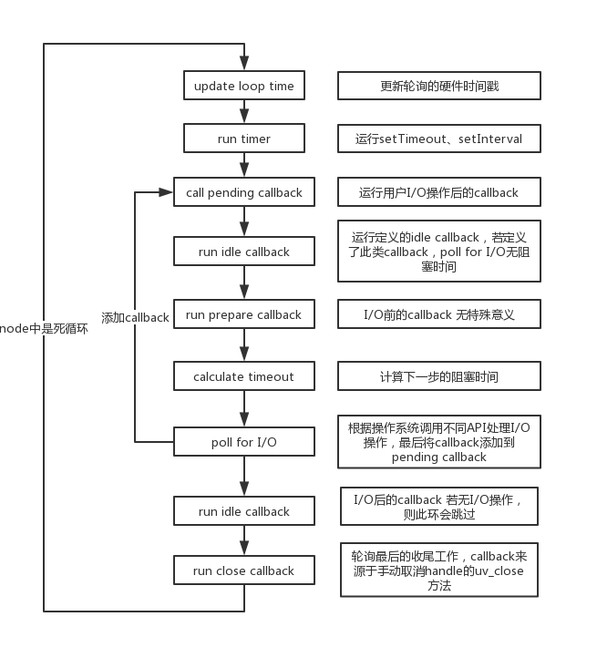
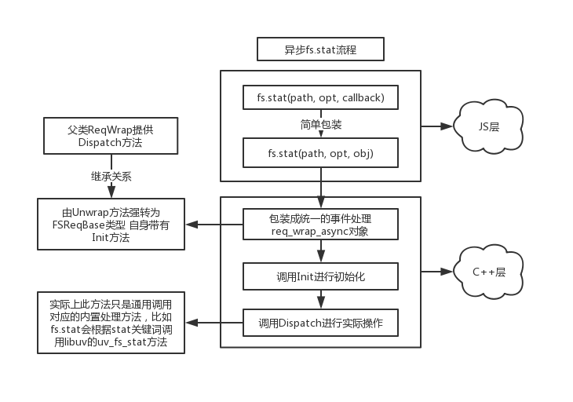

上一篇讲了轮询的边角料，这篇进入正题。(竟然真有人看我博客，上两个图给你们整理下思路)
这是轮询总流程图。

下图为本节内容简图。

Poll for I/O
The loop blocks for I/O. At this point the loop will block for I/O for the duration calculated in the previous step. All I/O related handles that were monitoring a given file descriptor for a read or write operation get their callbacks called at this point.
简单来讲，就两点：
1、根据计算的timeout来进行I/O操作，这里的操作包括fs.readFile、fs.stat等，期间进程将被阻塞。
2、所有I/O的handles会使用一个给定的文件描述符进行操作，并会调用对应的callbacks。
Call pengding callbacks
Pending callbacks are called. All I/O callbacks are called right after polling for I/O, for the most part. There are cases, however, in which calling such a callback is deferred for the next loop iteration. If the previous iteration deferred any I/O callback it will be run at this point.
从解释中看不出什么信息，但只有这一步真正调用我们从JS传过去的callback。
既然要解析，那么不如从一个API入手，走一遍看代码流向。
这里还是用之前fs.stat方法，虽然在前面(https://www.cnblogs.com/QH-Jimmy/p/9395985.html)有过看似很深入的解释，但也只是走马观花的看了一遍，这次重新梳理一遍。
与上篇一样，省略大量无关源码。
JavaScript层
同样从简易的lib/fs.js文件中出发，这次着重注意的是传过去的三个参数。
function stat(path, options, callback) {
// ...
// FSReqCallback是来源于c++层的一个class
const req = new FSReqCallback(options.bigint);
req.oncomplete = callback;
// 这里的第三个参数是一个Object 回调函数仅作为一个oncomplete属性
binding.stat(pathModule.toNamespacedPath(path), options.bigint, req);
}如下:
1、第一个是处理过的路径path
2、第二个是一个可选参数，一般情况没人传，本文也不会做解析，毕竟不是重点
3、第三个是一个新生成的对象，而不是将我们的function直接作为参数传到stat方法中
node层
接下来直接到src/node_file.cc文件中，这里会检测参数并做包装，不用懂C++直接看注释。
static void Stat(const FunctionCallbackInfo<Value>& args) {
Environment* env = Environment::GetCurrent(args);
// 检测参数数量是否大于2
const int argc = args.Length();
CHECK_GE(argc, 2);
// 检测path参数合法性
BufferValue path(env->isolate(), args[0]);
CHECK_NOT_NULL(*path);
// 检测是否传了use_bigint
bool use_bigint = args[1]->IsTrue();
// 在同步调用stat的情况下 这个class为空指针
// if、else后面有同步/异步调用时参数情况
FSReqBase* req_wrap_async = GetReqWrap(env, args[2], use_bigint);
if (req_wrap_async != nullptr) { // stat(path, use_bigint, req)
AsyncCall(env, req_wrap_async, args, "stat", UTF8, AfterStat,
uv_fs_stat, *path);
} else { // stat(path, use_bigint, undefined, ctx)
// 同步情况...
}
}在之前那一篇讲node架构时，这块只是简单说了一下，直接跳到同步调用那块了。
但是只有在异步调用的时候才会出现poll for I/O，所以这次跳过同步情况，来看异步调用情况。(那一篇的异步情况是瞎鸡儿乱说的，根本没法看)
首先整理一下AsyncCall方法的参数。
AsyncCall(env, req_wrap_async, args, "stat", UTF8, AfterStat,uv_fs_stat, *path);env => 一个万能的全局对象，能存东西能做事情。可以通过env->isolate获当前取V8引擎实例，env->SetMethod设置JS的对象属性等等
req_wrap_async => 一个包装类
args => 从JavaScript层传过来的函数数组，可以简单理解为arguments
"stat" => 需要调用的fs方法名字符串
UTF8 => 编码类型
AfterStat => 一个内置的一个回调函数
uv_fs_stat => 异步调用的实际方法
*path => 路径参数
参数看完，可以进到方法里，这是一个模版函数，不过也没啥。
// Func类型为普通函数
// Args为路径path
template <typename Func, typename... Args>
inline FSReqBase* AsyncCall(Environment* env,
FSReqBase* req_wrap,
const FunctionCallbackInfo<Value>& args,
const char* syscall, enum encoding enc,
uv_fs_cb after, Func fn, Args... fn_args) {
return AsyncDestCall(env, req_wrap, args, syscall, nullptr, 0, enc, after, fn, fn_args...);
}
template <typename Func, typename... Args>
inline FSReqBase* AsyncDestCall(Environment* env,
FSReqBase* req_wrap,
const FunctionCallbackInfo<Value>& args,
const char* syscall, const char* dest, size_t len,
enum encoding enc, uv_fs_cb after, Func fn, Args... fn_args) {
// 异步调用这个类不能为空指针
CHECK_NOT_NULL(req_wrap);
// 依次调用包装类的方法
req_wrap->Init(syscall, dest, len, enc);
int err = req_wrap->Dispatch(fn, fn_args..., after);
if (err < 0) {
// 出现error的情况 不用看...
} else {
req_wrap->SetReturnValue(args);
}
return req_wrap;
}看似一大团，实际上函数内容非常少，仅仅只有一个Init、一个Dispatch便完成了整个stat操作。
由于都来源于req_wrap类，所以需要回头去看一下这个类的内容。
FSReqBase* req_wrap_async = GetReqWrap(env, args[2], use_bigint);
inline FSReqBase* GetReqWrap(Environment* env, Local<Value> value, bool use_bigint = false) {
if (value->IsObject()) {
return Unwrap<FSReqBase>(value.As<Object>());
} else if (value->StrictEquals(env->fs_use_promises_symbol())) {
// Promise情况...
}
return nullptr;
}不用看Promise的情况，在最开始的讲过，传过来的第三个参数是一个新生成的对象，所以这里的args[2]正好满足value->IsObject()。
这里的return比较魔性，没有C++基础的不太好讲，先看看源码。
template <class T>
static inline T* Unwrap(v8::Local<v8::Object> handle) {
// ...
// 这里是类型强转
return static_cast<T*>(wrap);
}
class FSReqBase : public ReqWrap<uv_fs_t> {
public:
// ...
void Init(const char* syscall, const char* data, size_t len, enum encoding encoding) {}
}
template <typename T>
class ReqWrap : public AsyncWrap, public ReqWrapBase {
public:
// ...
inline int Dispatch(LibuvFunction fn, Args... args);
private:
// ...
};剔除了所有无关的代码，留下了一些关键信息。
简单来讲，这里的Unwrap是一个模版方法，作用仅仅是做一个强转，关键在于强转的FsReqBase类。这个类的继承链比较长，可以看出类本身有一个Init，而在父类ReqWrap上有Dispatch方法，知道方法怎么来的，这就足够了。
这里重新看那两步调用。
req_wrap->Init(syscall, dest, len, enc);
int err = req_wrap->Dispatch(fn, fn_args..., after);首先是Init。
void Init(const char* syscall, const char* data, size_t len, enum encoding encoding) {
syscall_ = syscall;
encoding_ = encoding;
if (data != nullptr) {
// ...
}
}四个参数实际上分别是字符串"stat"、nullptr、0、枚举值UFT8，所以这里的if不会走，只是两个赋值操作。
接下来就是Dispatch。
template <typename T>
template <typename LibuvFunction, typename... Args>
int ReqWrap<T>::Dispatch(LibuvFunction fn, Args... args) {
Dispatched();
// This expands as:
//
// int err = fn(env()->event_loop(), req(), arg1, arg2, Wrapper, arg3, ...)
// ^ ^ ^
// | | |
// \-- Omitted if `fn` has no | |
// first `uv_loop_t*` argument | |
// | |
// A function callback whose first argument | |
// matches the libuv request type is replaced ---/ |
// by the `Wrapper` method defined above |
// |
// Other (non-function) arguments are passed -----/
// through verbatim
int err = CallLibuvFunction<T, LibuvFunction>::Call(fn, env()->event_loop(), req(), MakeLibuvRequestCallback<T, Args>::For(this, args)...);
if (err >= 0)
env()->IncreaseWaitingRequestCounter();
return err;
}这个方法的内容展开之后巨麻烦，懒得讲了，直接看官方给的注释。
简单来说，就是相当于直接调用给的uv_fs_stat，参数依次为事件轮询的全局对象loop、fs专用handle、路径path、包装的callback函数。
这篇先这样。